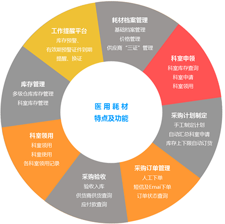

-
医用耗材管理系统
-
蓝创科技 - 医疗卫生信息化管理软件创新者，助力医院创优评级
-
主要功能包括：申请、审批、购进、代销、供应商资料审查、采购入库、科室领用、科室使用、科室库存查询等。不仅管理到医院的库房，还能管理到二级使用科室的库存、消耗量，使医院能够实时监控和管理全院各科室耗材。同时针对特殊耗材、植入性耗材，进行全程的记录和跟踪，真正实现了“高值耗材零库存、100%可追溯”！

-
高值耗材管理
实现扫描条码进行出入库、追溯查询管理，通过与HIS系统的接口，自动调取住院病人信息，手术医生扫码轻松完成划价。从生产到最终的使用，信息链完整追溯，实现了高值耗材信息与患者信息一一对应。真正做到高值耗材全程跟踪、可视化管理、可追溯等全流程闭环、精细化管理，实现 “高值耗材零库存、100%可追溯”！
高值耗材条码管理
针对已经准入和审批的高值耗材，维护原条码规则，系统支持扫描耗材源条码备货、划价、入库、追溯查询等操作，扫描条码即可自动找出对应信息。
高值耗材准入管理
建立完善的高值耗材字典、厂商证照和供货目录。同时可绑定高值耗材的厂商条码用于条码入库。经准入的耗材在系统中建立档案。经由设备科审批三证、价格审批后，才准入到医院各科室使用。
设备科备货领用管理
新高值耗材到达医院后，将耗材入库到虚拟的备货仓库，即进行备货处理，系统可查询各科室和仓库的备货的数量及相关信息，各科室也能查询到本科室已经领用的耗材信息。(支持扫条码备货、领用)。
科室划价管理
系统调出病人信息，扫描条码记录手术所使用的耗材，系统自动按公式划价。
高值耗材手术跟台管理
供货商跟台手术，耗材由供应商备货，科室不计库存。录入病人信息、扫描所使用的耗材条码，完成自动划价，保存进入入库记账处理。
高值耗材入账（入库）管理
设备科针对已经划价使用的高值耗材，定期按供应商进行查询近期已使用列表，并与发票栏目进行核对，可打印凭证或签字后到财务结帐。
高值耗材“零”库存
高值耗材使用“零库存”管理，先使用再买单。耗材在患者使用收费的同时进行高值耗材的使用登记，仓库根据使用登记进行审核，再做出入库处理。杜绝了高值耗材流失，同时减少医院耗材的资金占用。
普通耗材管理
主要功能包括：申请、审批、购进、代销、供应商资料审查、采购入库、科室领用、科室使用、科室库存查询等。不仅管理到医院的库房，还能管理到二级使用科室的库存、消耗量，使医院能够实时监控和管理全院各科室耗材。
耗材档案管理
针对已经准入和审批的高值耗材，维护原条码规则，系统支持扫描耗材源条码备货、划价、入库、追溯查询等操作，扫描条码即可自动找出对应信息。
科室申领
建立完善的高值耗材字典、厂商证照和供货目录。同时可绑定高值耗材的厂商条码用于条码入库。经准入的耗材在系统中建立档案。经由设备科审批三证、价格审批后，才准入到医院各科室使用。
采购计划制定
新高值耗材到达医院后，将耗材入库到虚拟的备货仓库，即进行备货处理，系统可查询各科室和仓库的备货的数量及相关信息，各科室也能查询到本科室已经领用的耗材信息。(支持扫条码备货、领用)。
采购订单管理
系统调出病人信息，扫描条码记录手术所使用的耗材，系统自动按公式划价。
采购验收
供货商跟台手术，耗材由供应商备货，科室不计库存。录入病人信息、扫描所使用的耗材条码，完成自动划价，保存进入入库记账处理。
科室领用
设备科针对已经划价使用的高值耗材，定期按供应商进行查询近期已使用列表，并与发票栏目进行核对，可打印凭证或签字后到财务结帐。
科室转科
高值耗材使用“零库存”管理，先使用再买单。耗材在患者使用收费的同时进行高值耗材的使用登记，仓库根据使用登记进行审核，再做出入库处理。杜绝了高值耗材流失，同时减少医院耗材的资金占用。
科室退库
科室需要退货给库房，则可进行退库操作。
采购退货
采购退货按批次退货，形成单号。未经供应商验收入库的产品不得进行退货管理。
支持多级审批
可以根据医院实际情况自定义科室领用等审批流程，支持多级审批流程，全程实现电子签名审批。
发票入库管理
在录入发票的同时，可采购入库单号、供应商进行查看单据明细。
普通耗材自动生成采购计划
采购计划不仅支持通过科室申请汇总，也可以直接临时手工下单，同时也支持再订货点、最高最低点、安全库存、出库量预测等方法自动形成采购计划。
库存管理
多级仓库库存管理、科室库存管理，支持随时查阅仓库存，记录科室耗材的日常使用记录，实时监控各科室的实际用量、库存量及相关数据统计。
普通耗材二级库管理
科室库存界面查询统计出来各科室的实际库存，二级库存上下限设置可以预警提醒库存不足；在使用过程中，系统支持退库，转科等操作，同时可以查询退库，转科记录。
普通耗材原条码扫描
普通耗材验收入库，在科室领用出库等均可通过扫描条形码来完成，并可通过扫描原条码进行账物相符核对工作，以及通过扫描原条码对耗材的流程进行监管。
普通耗材代销
当医院耗材存在代销或寄存的方式时，支持医院耗材零库存管理，耗材先使用，到月底进行汇总，然后和供应商进行结算的方式。
工作提醒平台
库存预警、有效期预警、证件到期提醒、换证。
报表管理
医院可以根据自身情况自定义查询相关数据，方便进行采购，仓库、财务等相关月度统计和制作报表，保持进出账一致。
产品优势
1. 产品实现符合国标、JCI认证以及医院管理需求的报表数据支持
医院可以根据自身情况自定义查询相关数据，方便进行采购，仓库、财务等相关月度统计和制作报表，保持进出账一致。
2. 产品能够进行远程管理，实现对分院等分支机构的管理
医院可以根据自身情况自定义查询相关数据，方便进行采购，仓库、财务等相关月度统计和制作报表，保持进出账一致。
3. 产品功能全面，性价比高，节省软件投入
医院可以根据自身情况自定义查询相关数据，方便进行采购，仓库、财务等相关月度统计和制作报表，保持进出账一致。
4. 公共开放数据平台，可分可合，灵活切割
医院可以根据自身情况自定义查询相关数据，方便进行采购，仓库、财务等相关月度统计和制作报表，保持进出账一致。
产品价值
1. 高值耗材零库存、100%可追溯
软件实现扫描条码进行出入库、追溯查询管理，通过与HIS系统的接口，自动调取住院病人信息，手术医生扫码轻松完成划价。从生产到最终的使用，信息链完整追溯，实现了高值耗材信息与患者信息一一对应。
2. 普通耗材实时、动态的库存监控机制，采购流程规范化
解决库存积压、库存过剩、库存不足等常见库存管理问题，自动生成订单，实现库存预警机制，进行库存动态管理。对科室申购、审批、询价、采购、领用进行数字化管理，使耗材采购流程规范、科学、有序。
3. 规范管理，提升设备科管理价值
全院设备资产按照财政局规范统一编码，设备管理流程符合医院设备科管理制度，软件的应用有助于贯彻和执行医院设备科管理理念，无形中提升设备科管理价值。
典型案例
河北医科大学第一医院
河北医科大学第一医院（简称“河北医大一院”）位于石家庄市东岗路，是一所以脑病诊疗为主要特色、以心血管病诊疗为龙头学科、以先心病救治闻名省内外的三级甲等综合医院。现有职工1900名，其中高级职称326名，享受国务院特殊津贴专家6名，河北省政府特殊津贴专家4名，河北省省管优秀专家3名，河北省有突出贡献的中青年专家7名，博士生导师14名。医院编制床位2000张，占地面积近百亩(75697平方米)，科室设置齐全，综合诊治内、外、妇、儿等各系统疾病。
郑州市第十六人民医院
郑州市第十六人民医院又名郑州大学第一附属医院集团医院，是河南省登封市阳城企业集团有限公司以“关爱生命、呵护健康、服务大众、奉献社会”的高度社会责任感，投资13.3亿元人民币，着力创建的一所集医疗、教学、科研、计生、急救、预防保健为一体的现代化大型非营利性综合医院。旨在回报社会，服务人民。